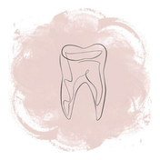
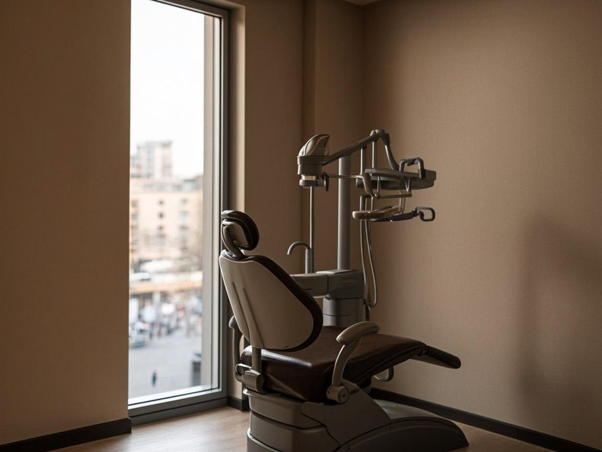
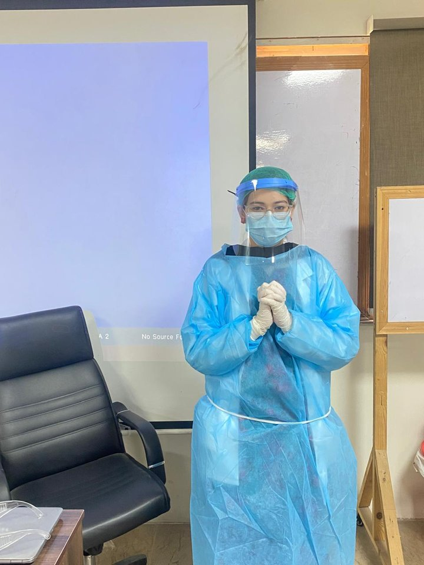
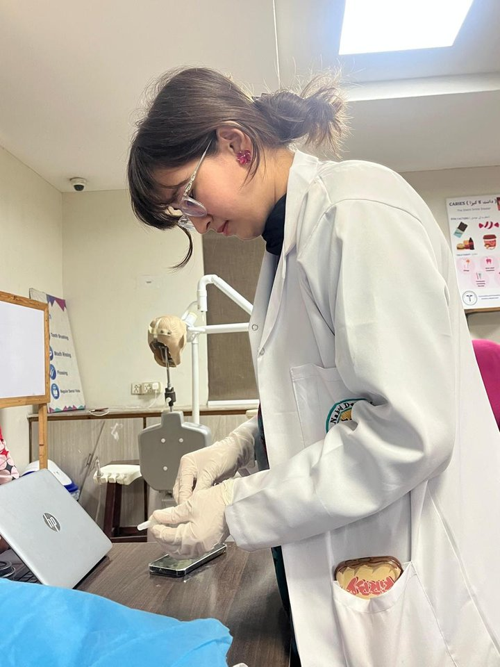
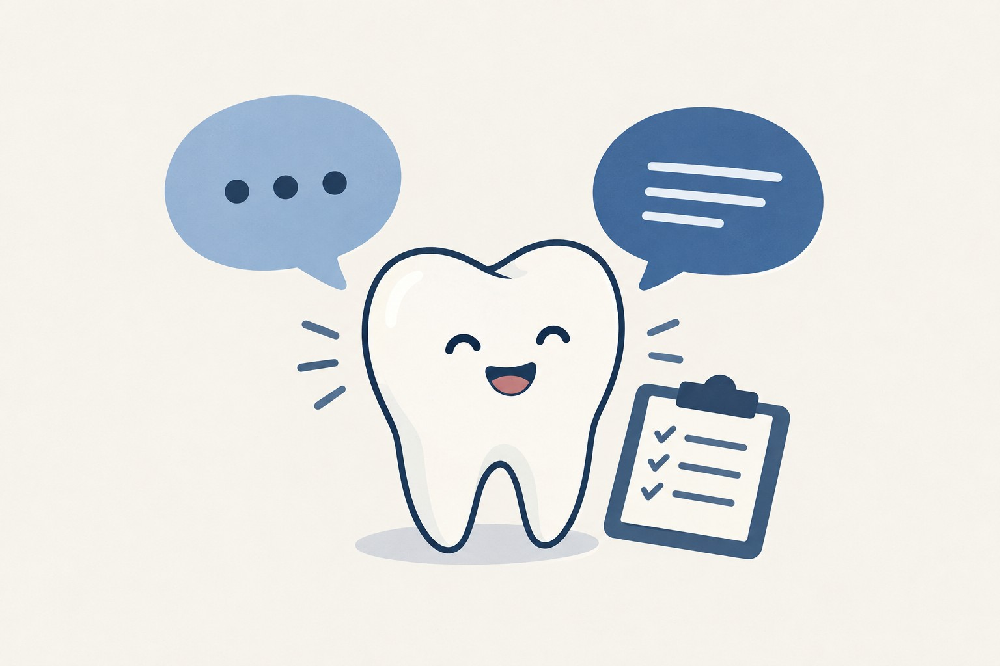
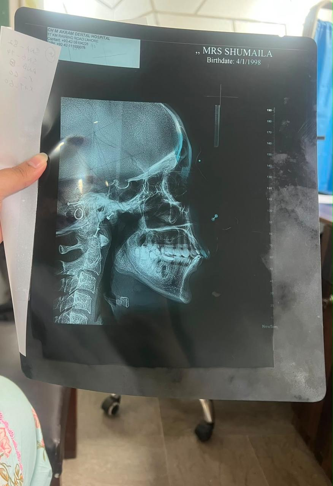
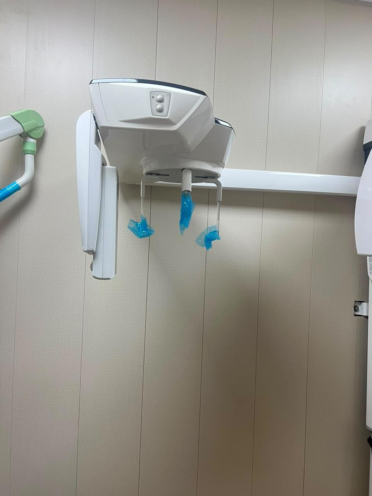
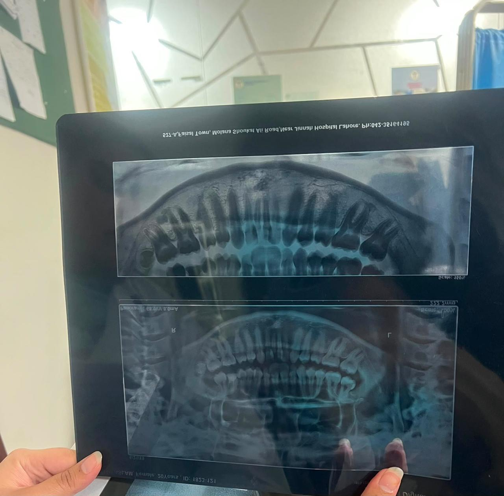
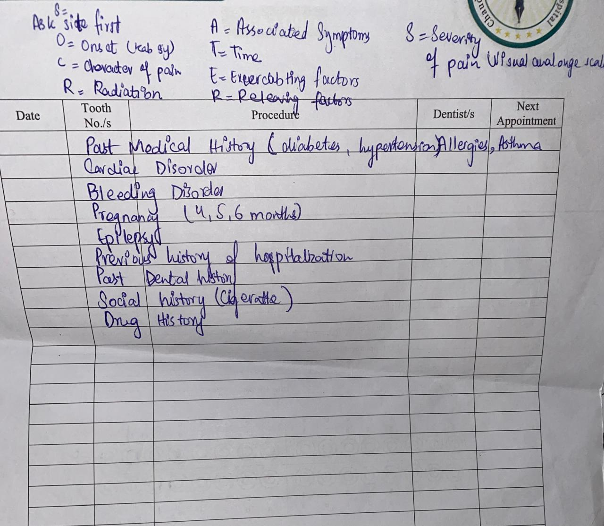
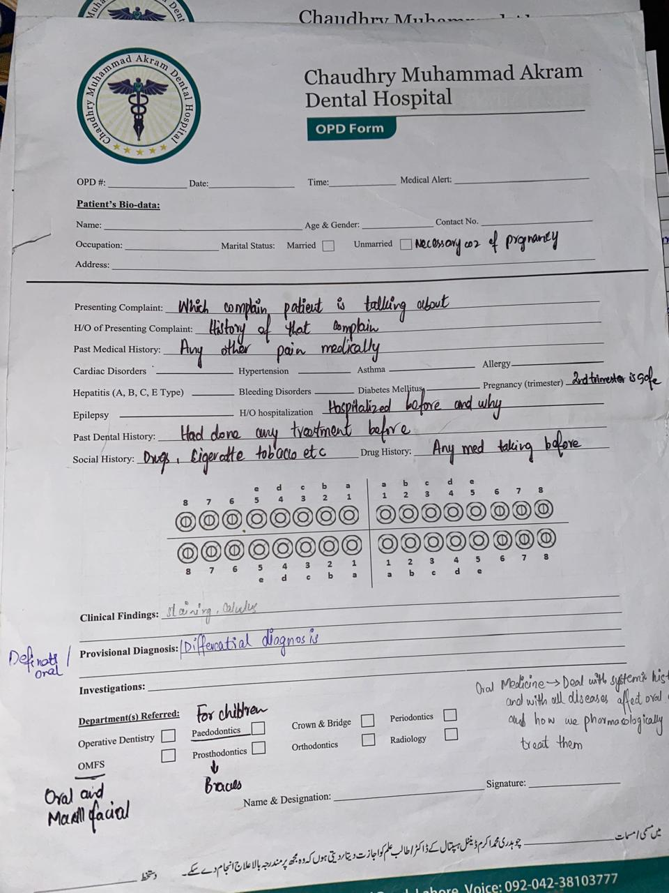

Schools,
then the
chair.
Every clinician was once a student with a timetable. Mine ran through three doors before the clinic — each one teaching a different kind of discipline.
Matric → Intermediate → BDS

CH. 01 ORIGIN
Dr. Areeba Batool
BDS · 2025 – 2029 · ANDC, Lahore
The story of how a first-year dental student becomes a clinician — told one rotation, one reflection at a time.
01 / Origin — How it started
Hi — I’m Dr. Areeba Batool, a BDS student documenting her growth across clinical rotations, reflections, and the small lessons that shape a future clinician.
I have a strong interest in developing my knowledge, practical skills, and professional attitude in dentistry.
My aim is to connect theoretical knowledge with practical experience — to learn from each clinical encounter, identify areas for improvement, and gradually grow into a competent, ethical, and compassionate dental professional.
02 / Education — The training years
Every clinician was once a student with a timetable. Mine ran through three doors before the clinic — each one teaching a different kind of discipline.
Matric → Intermediate → BDS
The Spirit School — Lahore
Where the foundations were poured, and the habit of showing up — every single day — quietly began.
KIPS College — Lahore
The stepping stone between school and the dental chair — long nights, short holidays, one direction.

ANDC · Lahore
Year one of four, in progress. Roll No. SU91-BDSMM-F25-006 — the number that follows every reflection I write.
2025 – 2029 · In progress
The vocabulary of the mouth, learned one subject at a time.
03 / Clinical — Behind the chair
“During these rotations I had the opportunity to observe and participate in various learning activities across four departments. The exposure helped me connect theoretical concepts with real clinical situations — and improved my communication, observation, teamwork, and professional conduct.”
Oral health begins outside the clinic — in schools, homes and everyday habits. On a school outreach session I assisted with screening children for visible caries, demonstrated brushing technique on a model, and handed out oral hygiene kits under the eye of a senior public-health officer. It widened the frame: prevention at scale needs a clear message, a repeatable protocol, and trust built in the first thirty seconds.
A clinician’s first instrument is a conversation. We role-played patient interviews in pairs — delivering a multi-visit treatment plan to an anxious “patient” — and practised the SPIKES framework for breaking difficult news, with peer feedback on tone, pacing and non-verbal cues. I learned to open a conversation, hold one, and close one with care; and to let silence do some of the work.
Learning to read the stories teeth tell in shadow and light. I observed intraoral periapical (IOPA) views, a panoramic radiograph (OPG) and a cone-beam CT for implant planning — watching how positioning, exposure and patient cooperation make or break image quality. By the end of the week my pattern recognition had grown enough to point out obvious caries and trace the lamina dura around a few teeth; what is there, what is missing, what is beginning.
Where careful questions become careful answers. I observed history-taking and examination of patients presenting with oral ulcers, white patches and suspected premalignant lesions, and was walked through a head-and-neck examination sequence and a structured history template — onset, duration, aggravating factors, systemic context. The discipline of looking before touching, and of building a differential that doesn’t anchor on the first plausible answer.
04 / Lessons — What it taught me
“A clinician is not made in a day — every patient, every reflection, every small correction counts.”
— Dr. Areeba Batool
00
Rotations completed
00
Stages of reflection
00
Year, of four
Connect theory with practice. Learn from every encounter. Grow — one correction at a time.
— The working aim
The method — Gibbs’ reflective cycle
Every rotation in this portfolio closes with a Gibbs reflection — six steps that turn an experience into a lesson. What follows is each rotation, reflected in full, exactly as written in the e-portfolio.
The reflections — in my own words
Reflection 01


Reflection 02

Reflection 03



Reflection 04


Regards — Dr. Areeba Batool · BDS · 2025 – 2029
05 / What’s next
Year one of four. The reflections keep arriving as the sessions do — status: in progress, exactly as it should be.
Write to me —
Send an email